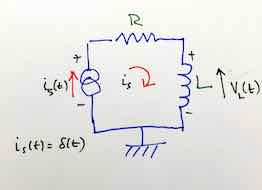
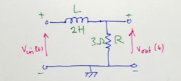
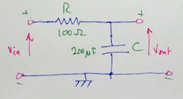

Homework 4#
The Impulse Response and Convolution#
The questions for Homework 4 are based on the examples given in Section 6.8 of [Karris, 2012].
Confirm the result of Example 5 from the notes using the convolution integral
\[h(t) * u_0(t) = \int_{-\infty}^{\infty}\,u_0(\tau)h(t-\tau)\,d\tau\]Compute the impulse response \(h(t) = i_s(t)\) (where \(i_s(t) = \delta(t)\)) in terms of \(R\) and \(L\) for the circuit shown in Fig. Q2 below. Use this result to compute the voltage \(v_L(t)\) across the inductor.

Fig. Q2: An RL Circuit
Redo the graphical convolution Example 2 from the notes by forming \(h(t - \tau)\) instead of \(u(t - \tau)\). That is, use the convolution integral
\begin{equation} \int_{-\infty}^{\infty} u(\tau)h(t-\tau),d\tau. \end{equation}
Confirm the result in MATLAB.
Redo the graphical convolution Example 3 from the notes by forming \(h(t-\tau)\) instead of \(u(t-\tau)\). Confirm the result in MATLAB.
Derive the transfer function
\begin{equation} H(s) = \frac{V_L(s)}{I_s(s)} \end{equation}
for the circuit of Fig. Q2.
Use this result to
Confirm the impulse response of this circuit \(V_L(t)\).
Compute the step response
\[ V_L(t) = \mathcal L^{-1}\left\{ H(s) U_0(s) \right\}. \]Validate this result in MATLAB.
For the network show in Fig. Q6 compute:
The transfer function
\begin{equation} H(s) = \frac{V_{\mathrm{out}}(s)}{V_{\mathrm{in}}(s)}; \end{equation}
The response of this circuit to the input \(v_{\mathrm{in}}(t) = u_0(t) - u_0(t - 1).\)
Validate this result in MATLAB.

Fig. Q6: An LR Network
For the network shown in Fig. Q7 compute:
The transfer function
\begin{equation} H(s) = \frac{V_{\mathrm{out}}(s)}{V_{\mathrm{in}}(s)}; \end{equation}
Determine the step response of the network.
State the time constant of the network.
Validate this result in MATLAB.

Fig. Q7: An RC Network
Answers to selected problems#
For question 2:
\[ h(t) = i_s(t) = \left(\frac{1}{L}\right)e^{-\left(\frac{R}{L}\right)t}\,u_0(t); \]\[ v_L(t)=-\left(\frac{R}{L}\right)e^{-\left(\frac{R}{L}\right)t}u_0(t) +\delta(t). \]For question 5 the transfer function is $\( H(s) = \frac{s}{s + R/L} \)$
and the step response is:
\[ v_L(t) = Le^{-\left(\frac{R}{L}\right)t}u_0(t). \]For question 6 the transfer function is
\[ H(s) = \frac{3/2}{s + 3/2} \]and the impulse response is:
\[ v_L(t) = \left(1 - e^{-1.5t}\right)u_0(t) - \left(1 - e^{-1.5(t-1)}\right)u_0(t-1). \]For question 7 the transfer function is
\[ H(s) = \frac{50}{s + 50}; \]the step response is
\[ \left(1 - e^{-50t}\right)u_0(t) \]and the time constant is: \(T = RC = 1/50\) s.
Reference#
See Bibliography.